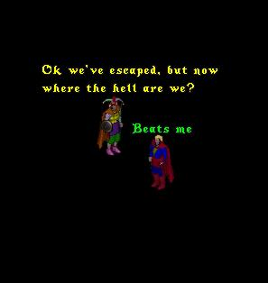
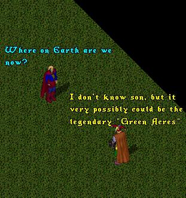
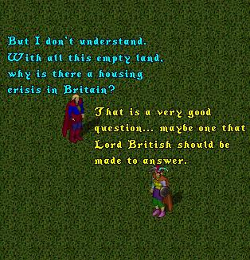
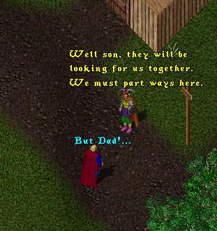
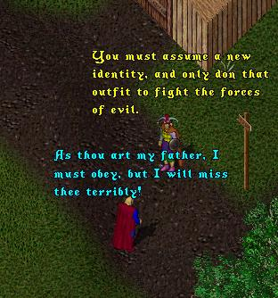
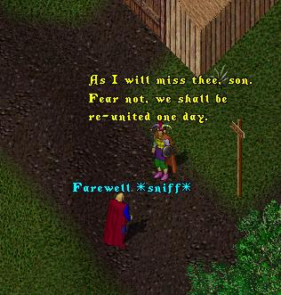
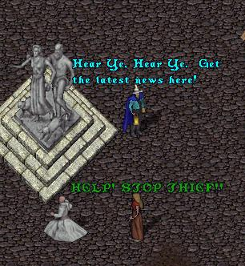
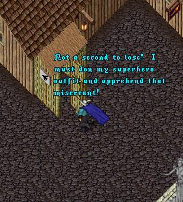
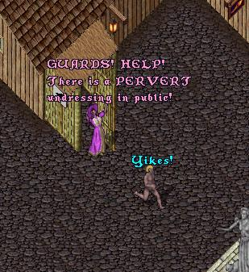

If you will remember the last time we saw
ImaNewbie and SuperNewbie together they
had just escaped from prison and found
themselves in a seemingly endless black void.
 |
After wandering aimlessly for days the intrepid
pair finally emerge from the blackness into a
huge grassy plain, devoid of trees, houses, or
just about anything else for that matter.
 |
 |
Eventually the two make it back to Britannia and a
path on the outskirts of Britain. Here ImaNewbie
decides that he must make a painful decision.
 |
 |
 |
Heeding his fathers advice SuperNewbie dons his
disguise and takes up the role of Klark Bent, mild-
mannered town cryer for the town of Minoc. But it
is not long before his role as crimefighter and
defender of justice is called upon.
 |
Spying a damsel in distress, Klark springs into
action, rushing to the nearest carrier-pidgeon
booth to don his SuperNewbie outfit.
 |
 |